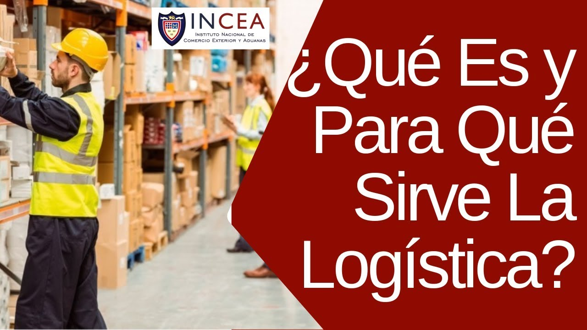

realizando nueva practica para ejecutar los comandos de commit y add


La logística son todas las operaciones llevadas a cabo para hacer posible que un producto llegue al consumidor desde el lugar donde se obtienen las materias primas, pasando por el lugar de su producción.
aprendiendo a simular con otros equipos de trabajo
Producción: la manufacturación se ha descentralizado de los centros de producción y hoy en día son muchos los procesos de fabricación de baja complejidad que se realizan en un almacén. De hecho, la logística es la encargada de coordinar fases como el montaje de kits o el paso del producto por estaciones de valor añadido.

Diferencias entre logística y gestión de la cadena de suministro Es un error usual confundir la logística y sus implicaciones con la cadena de suministro, que comprende todos los eslabones para la producción y entrega en las condiciones acordadas del producto. Como decíamos, la logística se define como la planificación, ejecución y control de los productos que entregamos a los clientes en la cantidad, calidad y tiempo correctos. Por su parte, la gestión de la cadena de suministro (o supply chain en inglés) se refiere a todo el flujo de trabajo, incluyendo el contacto final con proveedores y clientes. De esta manera, la logística es una pieza más (aunque probablemente la más importante) de toda la cadena de suministro. Ponemos, como ejemplo, una empresa del sector del retail: la logística se limitará a la planificación y ejecución de las fases de almacenaje y transporte, mientras que la cadena de suministro asumirá además las funciones de diseño y producción del producto, entre otras.
¿Para qué sirve la logística? La logística tiene el objetivo de servir de enlace entre los diferentes actores de la cadena de suministro. Así, es la encargada de garantizar que se cumplan, en los tiempos acordados, etapas como el aprovisionamiento de materia prima, la preparación de pedidos o de asegurar de que no haya entregas tardías. De hecho, las funciones logística en una empresa se pueden dividir en cuatro según el estado en el que se encuentre el artículo dentro de la supply chain. Así, se pueden distinguir entre: Aprovisionamiento: la logística se encarga de tareas como la gestión del stock dentro del almacén, la recepción de artículos, la sincronización entre las múltiples ubicaciones de la instalación o el procesamiento de pedidos, que más tarde irán hacia otra etapa logística. Producción: la manufacturación se ha descentralizado de los centros de producción y hoy en día son muchos los procesos de fabricación de baja complejidad que se realizan en un almacén. De hecho, la logística es la encargada de coordinar fases como el montaje de kits o el paso del producto por estaciones de valor añadido. Distribución: una vez almacenado, el siguiente paso es la preparación de pedidos según la demanda de producto que se haya producido. Así la logística sirve para tareas como la consolidación de pedidos, la expedición de entregas, la carga en camiones o de asegurar que la entrega se produce según los términos pactados con el cliente final. Postventa: el e-commerce ha dotado a esta etapa de la cadena de suministro de labores extra. Hoy en día, la logística debe gestionar el elevado gasto que suponen las devoluciones de producto y tratar de eliminar este sobrecoste siendo eficientes en todas las fases anteriores.
La consolidación de nuevas herramientas digitales en nuestro día a día ha provocado cambios en todos los aspectos de la sociedad. Así, la logística no se escapa de la necesidad de adaptarse a este nuevo paradigma, en el que mandan, entre otros: La digitalización de los datos La interconexión de sistemas Aplicaciones y datos en la nube Todos estos cambios pretenden garantizar que la industria se adapte cada vez más a las necesidades del cliente. La logística 4.0 incide especialmente en una mejora de la distribución, una mayor eficiencia en los procesos de almacenamiento y preparación de pedidos y una reducción en la entrega. De hecho, la digitalización de esta actividad no parece ser una revolución a largo plazo: según un estudio de la consultora Technavio, el mercado de los robots industriales crecerá a una media anual de un 35% hasta 2022, hasta alcanzar un volumen de negocio de 3,4 mil millones de dólares para ese año. Es por este motivo que en el significado de logística se debe entender que ya no hay una sola forma de contacto con su público objetivo (clientes, proveedores, técnicos, entre otros), sino que la omnicanalidad ya forma parte de nuestras vidas. Por eso, para asegurarnos una gestión eficaz de todos los procesos logísticos debemos incluir las nuevas tecnologías: Internet de las Cosas (IoT): herramientas para la predicción de la demanda, trazabilidad del producto, sistemas de gestión de almacenes (SGA), entre otros. Big Data: a fin de anticiparse a las demandas de los clientes, así como mejor conocimiento de nuestro producto. Robotización del almacén: para optimizar los procesos logísticos.